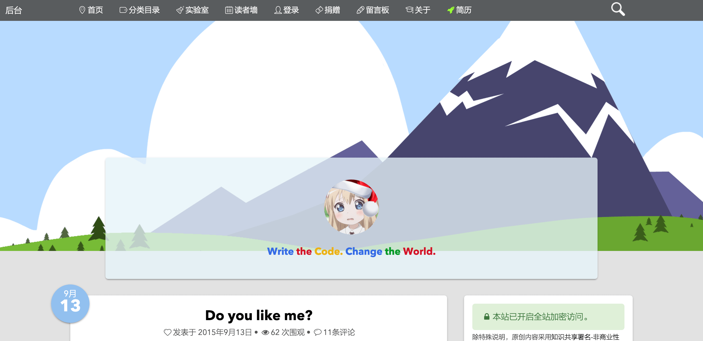
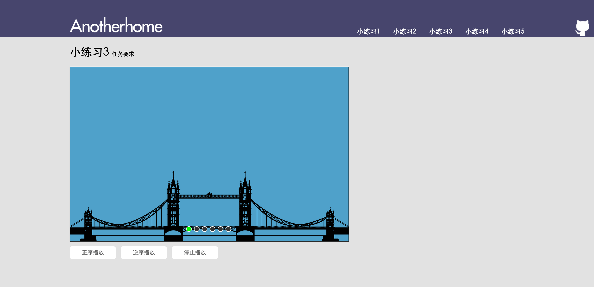

-
- Basic info. 基本信息
- 个人信息： 王钊伟 / 男 / 1991-07
- 教育经历： 暨南大学-软件工程 && 中科院计算所-计算机科学与技术
-
- Honors. 荣誉
-
竞赛获奖
美国大学生数学建模竞赛 国际一等奖 2013全国大学生数学建模竞赛 国家一等奖 2011全国大学生数学建模竞赛 国家二等奖 2012 -
荣誉称号
“国家奖学金获奖学生风采录” 优秀学生（全国110人） 2013暨南大学 “优秀学子”暨南之星标兵奖（全校第1名） 2013暨南大学 “有作为有贡献”毕业生（全校51人） 2014 -
奖学金
国家奖学金 2013国家励志奖学金（两次） 2011-2012益海嘉里-本科创新人才奖学金（两次） 2012-2013暨南大学优秀毕业生奖学金 2014
-
- Experience. 项目与工作经验
北京大学移动视频研究中心-华为海思公司暑期实习
2013.07 - 2013.09
-
针对中国大陆汽车的多车牌识别项目
实习期间，主要担任“针对中国大陆的多车牌识别”项目成员。第一阶段，完成了车牌定位模块的系统测试与定位准确率统计；第二阶段，完成车牌字符分割模块的二次系统开发与分割准确率测试，并分析分割错误原因，改进分割算法，提高准确率
中科院计算技术研究所pFind研究组实习
2014.02 - 2014.06
-
pFind 2.8蛋白质搜索引擎项目
实习期间，主要担任“针对中国大陆的多车牌识别”项目成员。第一阶段，完成了车牌定位模块的系统测试与定位准确率统计；第二阶段，完成车牌字符分割模块的二次系统开发与分割准确率测试，并分析分割错误原因，改进分割算法，提高准确率
个人项目
-
Anotherhome个人博客（2014.2 - 至今） 源代码 Demo
Wordpress主题修改（主要修改了 HTML CSS 部分，重构部分代码），内容维护，现日均浏览量 1000+
 -
百度IFE前端技术学院课程（2015.4 - 2015.6） 源代码
学习百度IFE前端技术学院春季班课程，并独立完成其中的任务
-
Task 0001 源代码 Demo
实现了一个个人博客网站的首页、文章、作品、关于等静态页面，合理运用HTML语义化标签，并实现了多栏布局、瀑布流布局、时间轴等布局样式。

-
Task 0002 源代码 Demo
实现了一个微型JS库，其中包括对原生 JavaScript 数据类型及语言基础、DOM、事件、BOM、Ajax等的操作和封装，并运用这个JS库实现了表单输入交互、倒计时工具、轮播图、输入提示框、界面拖拽交互
 -
Task 0003 0004 源代码 Demo
实现了一个 GTD Tools (个人任务管理系统)，支持任务两级分类、增删查改、标记、根据日期分类等功能，并实现了一个独立的移动版本
使用 localStorage 来保存用户的任务数据，处理了可能出现的 XSS 安全隐患，使用 原生JavaScript Less预处理器 来实现前端组件及数据交互，使用 Yeoman Grunt 改进工作流

-
-
HTML.LOVE 个人简历（2015.8 - 至今） 源代码 Demo
设计优雅、内容完善的静态简历页面，可以用浏览器直接生成合适尺寸的PDF，使用 Yeoman Grunt Bower 改进工作流
-
jCarrousel（2015.8） 源代码 Demo
一个3D轮播图 jQuery 插件，实现了3D轮播效果，可以自适应宽度、自适应图片数量，有方便的切换按钮，另外实现了播放、停止、切换到任意一张图片的API
-
Do-you-like-me（2015.9） 源代码 Demo
一个简单有趣的 UI 点赞组件，后端使用 NodeJS + MongoDB 实现，用 mongoose 操作 MongoDB，实现了对 MongoDB 数据库简单的增删查改

-
EasyGoAgent 源代码
开箱即用 & 在线更新的GoAgent，GitHub 上 Star 190 Fork 57
-
Show Me the Code Python version 源代码
一系列Python小程序，包括 图像处理 数据库 文件操作 正则式 等内容
-
Simple-C Compiler 源代码
一个用C编写的简单类C语言编译器，目前完成了 词法分析 语法分析 阶段，使用了 Lex Yacc 两个工具
-
WHUTNews 源代码
Python 编写的爬取教务处公告，判断是否有新通知，并把新通知发邮件提醒的简单 Python 爬虫程序
-
- Skill. 技能清单
Web前端
-
HTML / CSS
能够编写语义化的 HTML，模块化的 CSS，完成较复杂的布局
熟悉 Less / Sass / Autoprefixer 等CSS预处理和后处理方法、工具
-
JavaScript
熟悉原生Javascript，能脱离jQuery等类库编码
能运用模块化、面向对象的方式编程
了解 RequireJS jQuery AngularJS 的使用
-
其他
熟悉 Yeoman Bower Grunt Gulp 前端自动化工具
了解前端安全、性能优化方面的一些知识
后端
-
环境
熟悉 Linux 开发环境、 Linux 服务器环境搭建部署，两年 Linux 日常使用经验
了解 Apache Nginx web服务器，一年多建站经验
-
语言
了解 Python，能够实现简单的爬虫、数据及图像处理工具、自动化脚本
了解 C，读过《C Primer Plus》，能编写简单的解释器
了解 Java，能进行简单的网络编程和多线程编程
其他
-
是一个有趣的人，博客日均浏览量 1000+，GitHub Followers 270+，微博粉丝 660+，微信公众号关注用户 400+
严重强迫症，不能忍受界面一个像素的偏差，同样不能忍受代码格式一个空格的偏差
学习能力强，以上绝大多数的技能都是大三转专业之后自学修得的
掌握 Vim Git 等开发工具的使用
能够熟练使用 Markdown 进行写作

王钊伟的简历
"Write the Code. Change the World."
-
- Contact. 联系方式
- 微信：core_wzw
- SNS：822826900
- 手机：13261557523
- 邮箱：wangzhaowei@ict.ac.cn
-
- Application. 应聘岗位
- 研发、算法工程师
-
- Tech. 技能点
C/C++MatlabHTML/CSSPythonC#Java -
- Education. 教育背景